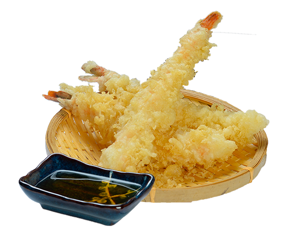

Sushi de Salmão
Ingredientes:
- Arroz para sushi
- Salmão fresco
- Alga nori
- Wasabi
- Gengibre em conserva
- Molho de soja
Modo de Preparo:
Prepare o arroz conforme as instruções da embalagem. Corte o salmão em fatias finas. Coloque o arroz sobre a alga nori, distribua o salmão, enrole e corte em pequenos rolos. Sirva com wasabi, gengibre e molho de soja.
Tempurá de Camarão
Ingredientes:
- Camarões grandes
- Farinha de trigo
- Amido de milho
- Água gelada
- Sal
- Óleo para fritar
Modo de Preparo:
Descasque os camarões deixando o rabo. Misture a farinha de trigo, o amido de milho, a água gelada e o sal até obter uma massa leve. Passe os camarões na massa e frite em óleo quente até dourar. Escorra em papel toalha e sirva imediatamente.
Missoshiru
Ingredientes:
- Missô (pasta de soja)
- Tofu
- Alga kombu
- Dashi (caldo de peixe)
- Cebolinha verde
Modo de Preparo:
Ferva o dashi com a alga kombu por alguns minutos. Retire a alga e adicione o tofu cortado em cubos pequenos. Dissolva o missô em um pouco de caldo e adicione à panela. Cozinhe por mais alguns minutos em fogo baixo. Sirva quente decorado com cebolinha verde picada.